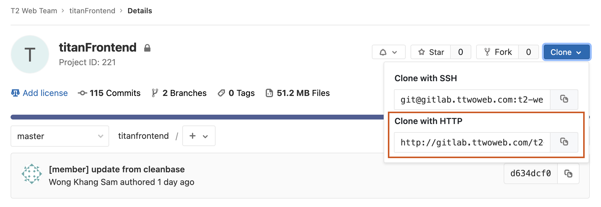
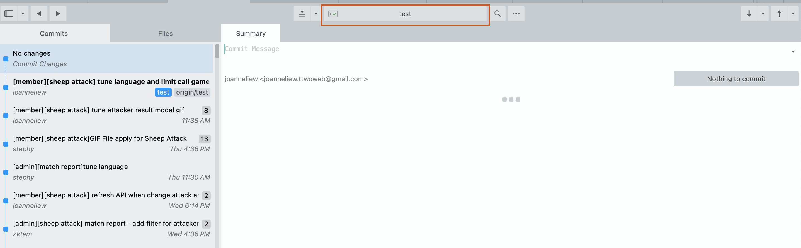

Subversion for Windows
Microsoft visual C++ 2015
https://www.microsoft.com/en-us/download/details.aspx?id=52685
Apache24 (WEB TEAM version) (Standard Platform)
https://drive.google.com/file/d/1uD6cmFymTX46LpMDU-H8YYCg1iHYLpii/view?usp=sharing
PHP (WEB TEAM version) (Standard Platform)
https://drive.google.com/file/d/1yng5dsZhAq_K3ggyUOD480OeTto0tdXN/view?usp=sharing
Git Bash
Sublime Text
Sublime Merge
Notepad++
Adobe XD
1. Open git bash
ssh-keygen
2. Will ask u save sshkey at where, press enter
3. Type password (optional)
4. Retype password (optional)
5. Copy ssh key
cat .ssh/id_rsa.pub
Create an account using company email
Copy url in 'Clone with HTTP'
Make sure your current branch is 'TEST'
Add server IP address after last line
103.76.36.101 testfront2
103.76.36.134 newtestfront3
Add project IP address after last line
## PROJECTNAME
127.0.0.1 PROJECTNAME.member
127.0.0.1 PROJECTNAME.admin
xxxxxxxxx testbackend.PROJECTNAME.testbackx //depends on project, can get from senior
103.76.36.101 testPROJECTNAMEsuperadmin.speed101.pw
*You need to restart Apache everytime you edit hosts file
Add your project directory path and local url
<VirtualHost *:80>
DocumentRoot "C:\Apache24\htdocs\PROJECTNAMEFrontend\admin"
ServerName PROJECTNAME.admin
ErrorLog "logs/PROJECTNAME.admin-error.log"
CustomLog "logs/PROJECTNAME.admin.log" common
</VirtualHost>
<VirtualHost *:80>
DocumentRoot "C:\Apache24\htdocs\PROJECTNAMEFrontend\member"
ServerName PROJECTNAME.member
ErrorLog "logs/PROJECTNAME.member-error.log"
CustomLog "logs/PROJECTNAME.member.log" common
</VirtualHost>
*You need to restart Apache everytime you edit vhosts.conf file
After done setup host and vhosts.conf, open your browser and check whether you can access the web page
PROJECTNAME.member/
PROJECTNAME.admin/
*Each project has different config.php, refer here
You need to have config.php to login to the project in browser.
Cd to the project directory > member/admin > include
cd C:\Apache24\htdocs\PROJECTNAMEFrontend\member\include
Scp config.php from test site to local repository
scp root@testfront2:/var/www/PROJECTNAMEProjectTEST/member/include/config.php .
Add below line in config.php (if don't have)
'isLocalHost' => 1,
*Each project has different language, refer here
You need to grab lastest language to view latest language in browser.
Cd to the project directory > member/admin > language
cd C:\Apache24\htdocs\PROJECTNAMEFrontend\member\language
Scp language php file from test site to local repository
scp root@testfront2:/var/www/PROJECTNAMEprojecttest/member/language/lang_all.php .
Scp language js file from test site to local repository
scp root@testfront2:/var/www/PROJECTNAMEprojecttest/member/language/lang_english.js .
Write commit message based on the format below
Module/Feature
[Admin][Module][pageName] description
[Member][Module][pageName] description
eg. [Member][NicePay][payment.php] plugin nicepay module
eg. [Admin][NicePay][paymentListing.php] plugin nicepay payment listing
Document Tuning
[Admin][doc + date][pageName] description
[Member][doc + date][pageName] description
eg. [Admin][doc140622][portfolio.php] add 'memberID' column & filter
Normal Tuning
[Admin][pageName] description
[Member][pageName] description
eg. [Member][support.php] tune input background color
If commited a commit but still need to commit another tuning
Add (No) behind the description
eg. [Member][profile.php] tune client ID to member ID
eg. [Member][profile.php] tune client ID to member ID (2)
ssh to project test server
ssh root@newtestfront3
cd to project directory
cd /var/www/
Check whether the project folder is inside the directory
ls
If yes, cd to the project
cd PROJECTNAME
Git pull to test site
git pull
Check whether the latest code is up to test site
https://testPROJECTNAMEmember.speed101.pw/
https://testPROJECTNAMEadmin.speed101.pw/